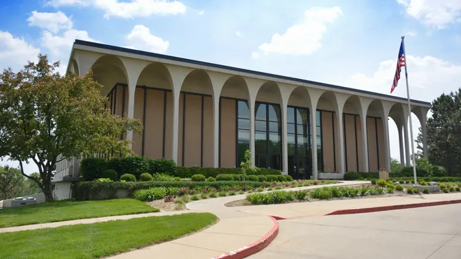
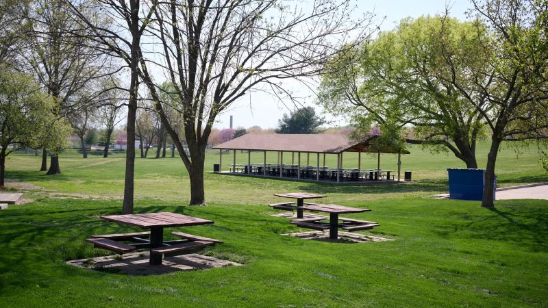

The Church of Jesus Christ of Latter Day Saints
Who Are We?
We are the Church of Jesus Christ of Latter Day Saints, commonly abriviated to LDS, though others still know us as Mormons, however that was a nickname that we have been pushing to get rid of for a while now. We are Christ's true church in the latter days and we were reorginized in these last days back in the early 1800's, by the mondern prophet Joseph Smith. It was he who learned through revelation that Independence Missouri would be the heart New Jerusalem and would be essential for the Lord's church after His second comming.
What Is Zion?
Zion has multiple meanings and requires context to understand which meaning someone is referring to. Often Zion refers to the Lords people and is a basic understanding to love thy neighbor and to help one another. When one talks about a place of Zion, they could be talking about a group of people anywhere around the globe. These people would typically be embodying the Lords people. The other thing they could be talking about is Independence Missouri. Independence has been revealed to be the heart of the New Jerusalem and is where the Lord will reign when He returns to the Earth.
Contact Us
If you would like to learn even more about the church you can go to the About Us page to learn more history of our time in Independence, or you can go to the Churches website to find missionaries in your area to teach you even more about the Lords Gospel. If you have any questions you would like to ask, you can go to our Learn More page to contact us.
